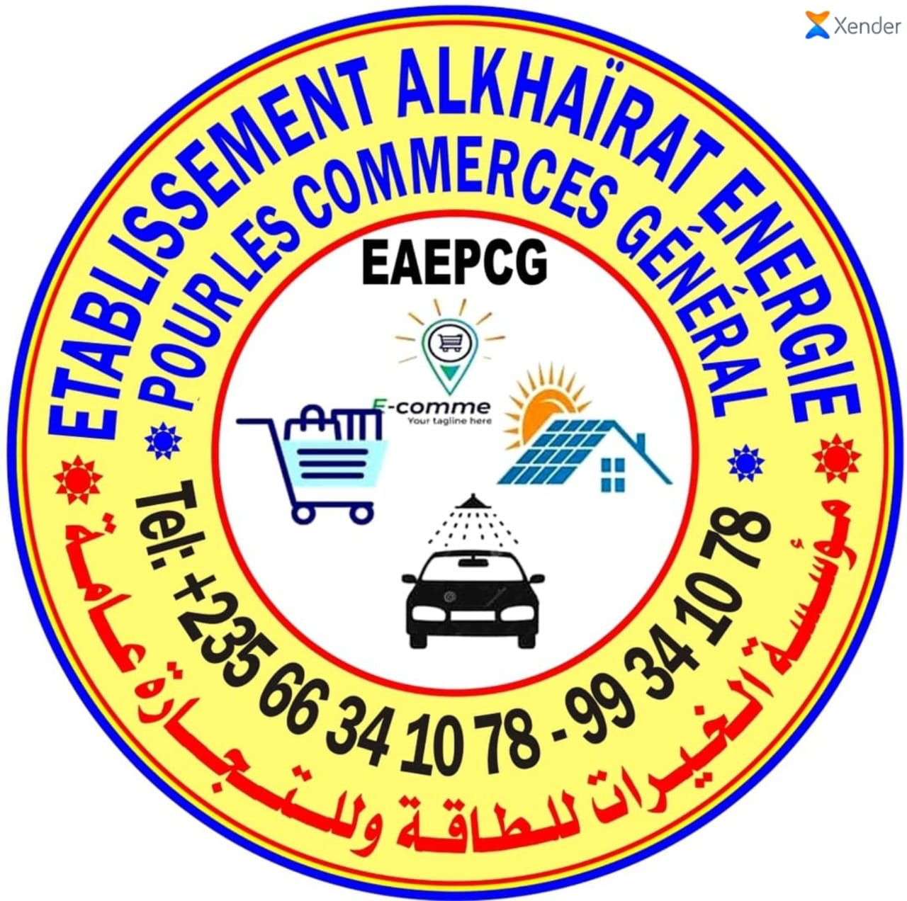

Vous êtes actuellement hors ligne. Vérifiez votre réseau mobile ou Wi-Fi et réessayez. La page se rechargera automatiquement dès le retour du réseau. You are currently offline. Please check your mobile network or Wi-Fi and try again. The page will reload automatically once connection returns. أنت غير متصل بالإنترنت حاليًا. يرجى التحقق من شبكة الهاتف أو الواي فاي وإعادة المحاولة. ستتم إعادة التحميل تلقائيًا بمجرد عودة الاتصال.